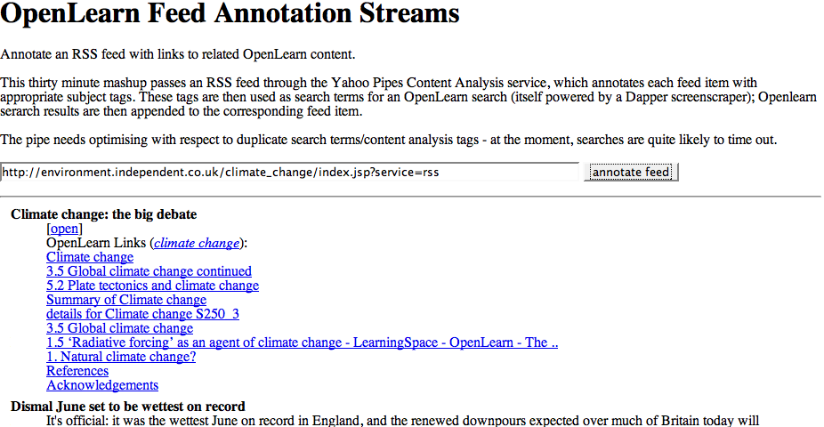

July 14, 2007
OpenLearn Feed Annotation Streams
One of the things a few of us have been looking at informally over the last few months are ways of assembling relevant educational content around Open2.net broadcast related content - think "Sleevenotez for education", or something similar.
To be scaleable, we need an automated solution for achieving this, so I had a little tinker with a Yahoo Pipe that will take an RSS feed, pass it through the Yahoo Content Analysis package and use the resulting terms as search terms over OpenLearn content:

You can try out the service with any RSS feed here: OpenLearn feed annotator.

The Pipe is a little slow at times - and is in desperate need of optimisation (e.g. to prevent multiple OpenLearn queries using the same content analysis generated search terms).
The quality of the annotation service is dependent on at least two things - the effectiveness of the content analysis service, and the effectiveness of the OpenLearn search (which itself is dependent on the size of the OpenLearn corpus that has been indexed and the extent to which the OU search engine has been optimised over that content).
Anyway - it's a starting point, and while many of the annotations are a little, shall we say, a little quirky at the moment, it's something to help get across the idea of feed annotation streams.
Posted by ajh59 at July 14, 2007 07:51 PM